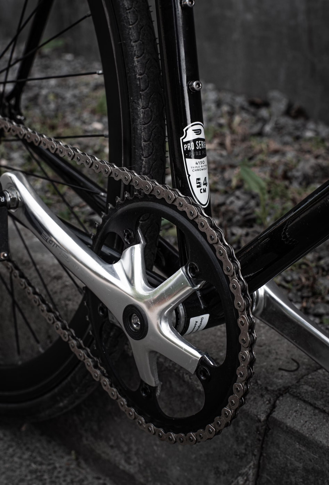
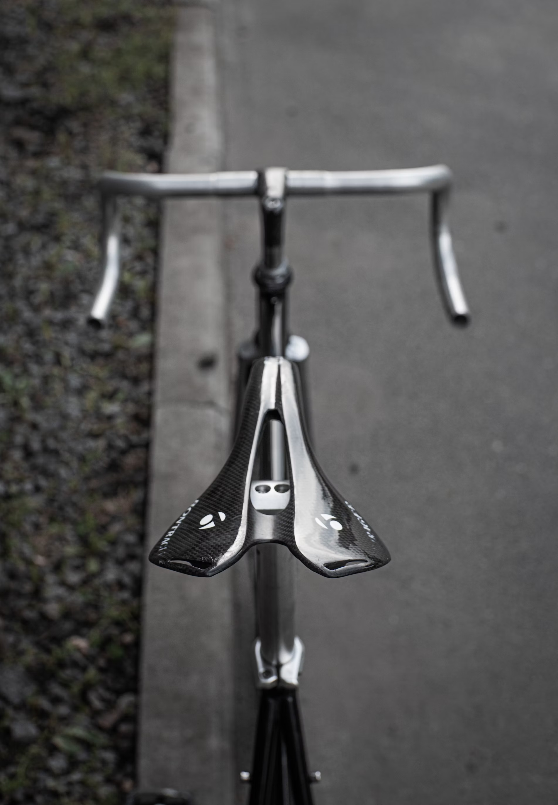
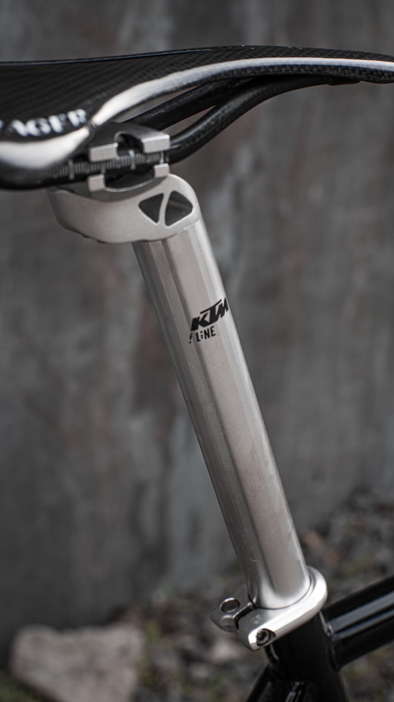

La cadena de tu bicicleta es esencial para un funcionamiento suave. Limpiala regularmente con un desengrasante y aplicale lubricante especifico para cadenas.
Un volante bien ajustado te proporciona mayor control y comodidad. Asegurate de que esta a la altura adecuada y que los tornillos estan bien apretados.
Un asiento comodo es clave para disfrutar de largos paseos. Considera utilizar una funda de gel o reemplazar el asiento si es necesario.
